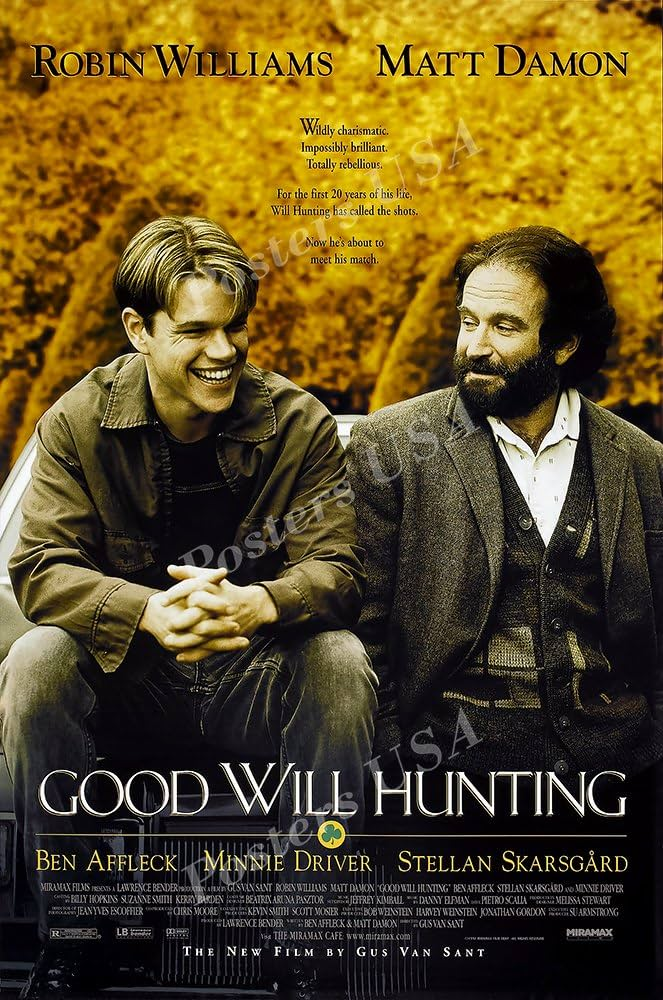

This is my favourite movie since I was a kid I growed up with this movie. The freedom and resiliance of the spirit are some of the most important qualities and they are delivered very powerfully in the message of the movie.

A timeless classic with its compelling story, authentic characters, and witty dialogue. (I always liked movies about geniuses)
Super beautiful animation, I just love animated movies like "Silent Voice" and "I want to eat your pancreas" and others too.